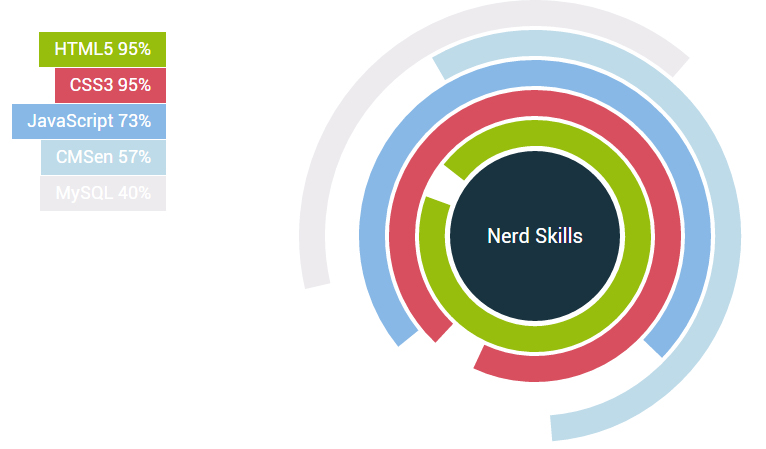
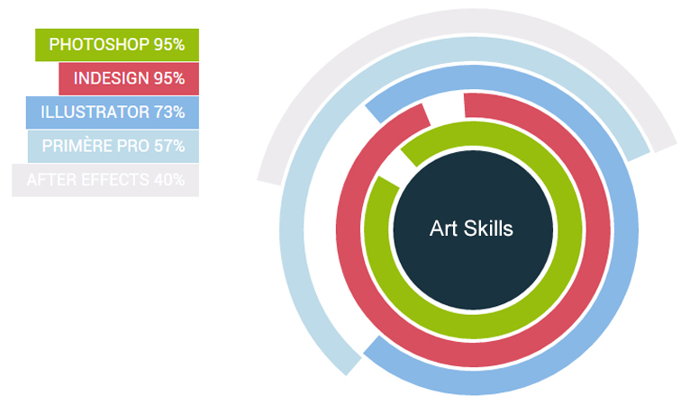

Ik ben een enthousiaste Frontend Developer. Ik houd mij graag op de hoogte met de nieuwste trends en ontwikkelingen. Bezigheden waar ik graag ruimte voor vrij maak, zijn evenementen die te maken hebben met Visueel vormgeving en de nieuwste trends op het web. Daarom probeer ik in projecten de nieuwste trends toe te passen, zodat het product lang mee kan draaien.
Verder heb ik natuurlijk ook activiteiten waar ik mee bezig ben, die niet met mijn beroepsrol te maken hebben. Ik houd mij ook bezig met sporten. Ik vind het fijn dat ik mij kan uiten in iets waar ik mijzelf helemaal kan geven, daarom sport ik ook minimaal één keer in de week.
Wanneer ik bezig ben met een website, zoals met mijn portfolio. Dan zet ik altijd eerst design trends op een rij en probeer ik iets te combineren. Of juist iets anders te doen dan de rest. Een eigen signatuur vind ik persoonlijk belangrijk. Ik vind het altijd erg belangrijk en een uitdaging om bij elke nieuwe opdracht weer iets nieuws te leren. Zo begon ik twee jaar geleden met een simpele website die uit één pagina, voor één bepaalde resolutie en browser beschikbaar was. Gelukkig is dat in de afgelopen twee jaren enorm veranderd.
Ik ben op gebied van Frontend development enorm gegroeid. Ik heb veel kennis opgedaan over HTML5 en CSS3. Dit zijn ook talen die ik goed beheers. Verder heb ik daarbij MySQL en Javascript geleerd die ook aardig onder de knie heb. Verder waar ik nog meer aan het stoeien ben, maar vooruitgang in zit, is PHP. PHP is voor mij een nieuwe interessante uitdaging, waar ik veel van leer.
Nu maak ik een website voor alle browsers, resoluties en probeer ik een goede hiërarchie te creëren op mijn website. Hoe diep moet je navigeren en hoe veel verschillende pagina’s moet ik maken. Dat hangt natuurlijk ook af met het design wat ik kies en maak. Verder hanteer ik altijd mobile first, als het aan komt op het maken van websites. Ik zorg eerst dat de lay-out goed eruit ziet op een mobiel apparaat, dan pas ga ik voor grotere schermen coderen. Als ik dat allemaal heb afgerond, vul ik pas alle content in.
Zelf probeer ik ook actief bij te dragen aan het ontwerp proces. Dit kan zijn door mee te ontwerpen of mee te denken. Ik wil graag dat ik hier wat meer bekend mee word. Ik heb al ervaring met Photoshop, Illustrator en Indesign. Verder ben ik bezig om Première Pro en After Effects onder de knie te krijgen.
Op deze manier heb ik ook mijn portfolio gemaakt. Zelf ben ik daar trots op, natuurlijk is er altijd ruimte voor verbetering.